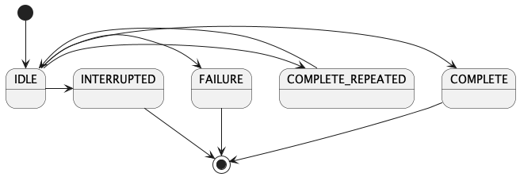

Sphinx¶
Abstract |
Sphinx and restructuredText |
Authors |
Walter Fan |
Status |
WIP |
Updated |
2023-07-25 |
Overview¶
Sphinx 是我用过的最强大的文本构建系统, 众多的开源项目用它来编写用户文档, 帮助手册, 它不但支持 restructuredText 和 Markdown 还有众多强大的插件可供使用.
Example¶
Flow chart¶
mindmap
Class diagram¶
State diagram¶

![@startuml
actor "Main Database" as DB << Application >>
note left of DB
This actor
has a "name with spaces",
an alias
and a stereotype
end note
actor User << Human >>
actor SpecialisedUser
actor Administrator
User <|--- SpecialisedUser
User <|--- Administrator
usecase (Use the application) as (Use) << Main >>
usecase (Configure the application) as (Config)
Use ..> Config : <<includes>>
User --> Use
DB --> Use
Administrator --> Config
note "This note applies to\nboth actors." as MyNote
MyNote .. Administrator
MyNote .. SpecialisedUser
' this is a text comment and won't be displayed
AnotherActor ---> (AnotherUseCase)
' to increase the length of the edges, just add extras dashes, like this:
ThirdActor ----> (LowerCase)
' The direction of the edge can also be reversed, like this:
(UpperCase) <---- FourthActor
@enduml](../_images/plantuml-dadd71ecaaa06c8b66fb56baa0487d233e2c11b4.png)